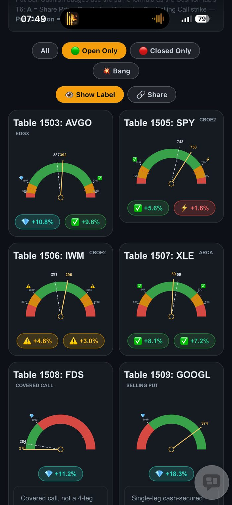

I didn't ask for a chart. I asked for a way to know when to close a trade. One AI session, one set of tokens, and my Iron Condor cushions turned from a wall of percentages into a needle I can read in half a second — green, orange, or red.
我要的从来不是一张图表，而是一个能让我知道“该平仓了”的方法。一次AI对话，一笔token预算，我的铁鹰策略安全垫从一整排百分比数字，变成了一根我半秒钟就能看懂的指针——绿色、橙色，或红色。
My Cushion tab already told me the truth: "+5.6%", "+1.6%", "-2.3%". Everything I needed was right there. But a table doesn't grab you. When I'm checking my phone between meetings, I don't want to read eight rows of numbers and mentally sort them into "fine" and "close this now" — I want the one that's in trouble to jump out at me before I've even finished scrolling.
我的「缓冲」页签本来就诚实地告诉我一切：“+5.6%”、“+1.6%”、“-2.3%”。我需要的信息全都在那里。但表格不会主动抓住你的注意力。当我在开会间隙看手机时，我不想读八行数字，还得在脑子里自己分类哪些“没事”、哪些“该马上平仓”——我要的是，那个出问题的仓位，在我还没滑完屏幕之前，就自己跳出来。
This is what came out of one continuous session on Paul's World's options dashboard (T29): a semicircle speedometer, one per Iron Condor, with the needle showing exactly where the live share price sits between my strikes. Green is the profit zone. Orange is the warning band. Red means the price has broken through — time to close or roll.
这就是在Paul's World期权仪表板（T29）上，一次连续对话做出来的成果：一个半圆形速度表，每个铁鹰策略一个，指针精确显示现价落在我的行权价之间的哪个位置。绿色是盈利区，橙色是警戒区，红色代表股价已经突破——该平仓或展期了。
It didn't stop at the chart. Inside the same token budget, the gauge grew a live needle-tip price label, the exact same Put/Call Cushion badges from my table (so the colour and the number always agree), the formula spelled out with real numbers plugged in so I can check the maths, a "Hide Label" mode that shrinks nine positions down to one screen, a 3x3 layout for when I turn my phone sideways, and a Share button that drops anyone straight onto this tab.
而且不只是做出一张图表。在同一笔token预算内，仪表盘还长出了指针尖端的即时价格标签、和表格里一模一样的认沽/认购安全垫徽章（确保颜色和数字永远一致）、把真实数字代入后的完整公式（方便我自己核对算法）、一个能把九个持仓缩到一屏显示的“隐藏标签”模式、手机横放时自动切换的3x3排列，还有一个能让任何人直接跳到这个页面的分享按钮。

"Convert this to a gauge chart." Then, one screenshot with a circle at a time: "add the cushion icon here," "make the number positive," "let me hide the labels," "fit 9 on one screen." No code, no design brief — just what I wanted to see next.
“把这个转换成仪表盘图表。”然后，每次拍一张截图并圈出一个地方：“这里加个安全垫图标”、“把数字改成正数”、“让我能隐藏标签”、“9个都塞进一屏”。没有写代码，没有设计说明书——只是我接下来想看到什么。
A working change, tested in a headless browser with a real screenshot before it ever reached me, then pushed live automatically. I never opened an editor. I just looked at the next screenshot and said what still needed fixing.
一次真正可用的修改，在发给我之前先用无头浏览器测试并截图确认，然后自动推送上线。我从头到尾没打开过任何编辑器。我只是看着下一张截图，说出还有什么需要修正。
I'm 70, retired, and I trade Iron Condors for income — not excitement. The whole point of the strategy is that I collect a small, steady credit and I'm not supposed to be glued to the screen. But that only works if I can trust a five-second glance to tell me the truth. A percentage in a table asks me to do arithmetic under pressure. A red gauge just tells me.
我70岁了，退休了，做铁鹰策略是为了赚取稳定收入——不是为了刺激。这个策略的核心，就是我收取一笔小额、稳定的权利金，而不该一直盯着屏幕。但这只有在我能信任“看五秒就知道真相”的时候才成立。表格里的百分比，是要求我在有压力的时候做算术。而一个变红的仪表盘，只是直接告诉我。
And it all came out of one session, one token budget — not a multi-day build, not a developer I had to brief and wait for. That's the part that still doesn't feel normal to me, even after all these articles.
而这一切都来自一次对话、一笔token预算——不是花几天做出来的项目，也不需要找工程师说明需求再等待。这一点，即便写了这么多篇文章，我到现在还是觉得不太真实。
The numbers were always right there. What I was missing was a way to feel them without reading them. One session, one set of tokens, and now my Iron Condor cushions don't just report a percentage — they tell me, in red, orange, or green, exactly what to do next.
数字其实一直都在那里。我缺的，是一种不用逐字读就能感受到它们的方式。一次对话，一笔token预算，现在我的铁鹰安全垫不再只是回报一个百分比——它用红、橙、绿，直接告诉我接下来该做什么。
— Paul Yeo, August 2026 🌟